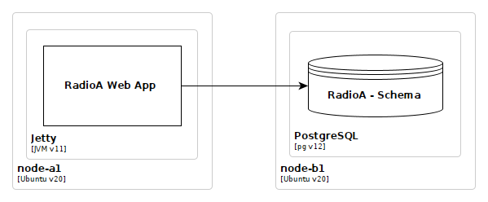
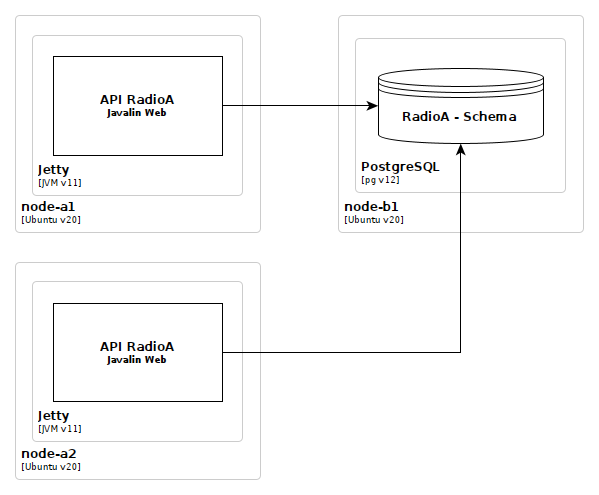
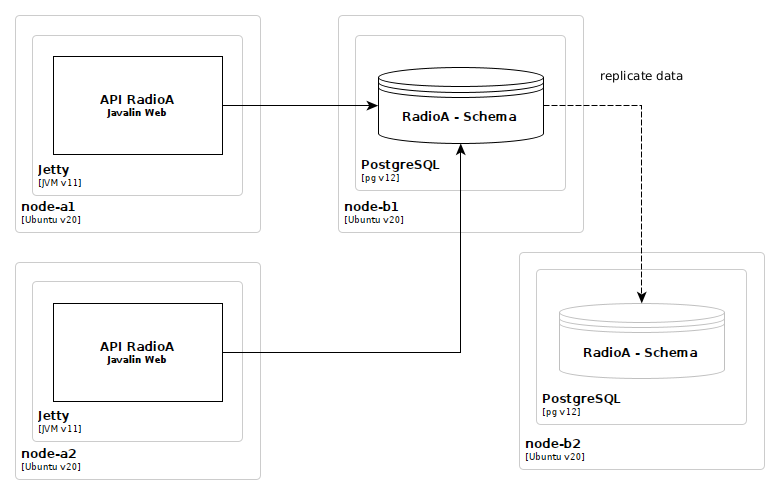

ENRIQUE MOLINARI
¿Qué son los Atributos de Calidad?
Propiedades de diseño medibles y testeables de los sistemas que son utilizadas para entender cuan bien los sistemas satisfacen las necesidades de los stakeholders.
Ya hemos hablando mucho sobre Modificabilidad
Con elementos de software a nivel componente (contenedor) tambien tengo modificabilidad. Ej: API Gateway
¿Qué significa Disponibilidad?
Un sistema está disponible si al recibir una petición responde de acuerdo a lo especificado.
¿Cómo se define la disponibilidad de un sistema?
La disponibilidad se define como la probabilidad de que un sistema este en funcionamiento en un momento dado.
¿Por qué?
No hay forma de saber de antemano cuando los elementos de un sistema dejaran de funcionar.
¿Cómo se define la disponibilidad de un sistema?
Para especificar la disponibilidad de un sistema se utiliza la notación de nueves.
Si decimos que un sistema tiene 99.9% de disponibilidad, lo que realmente estoy diciendo es que en un año podría estar 8,76 horas no disponible.
¿Cómo se define la disponibilidad de un sistema?
¿Cómo llego a ese resultado?
99.9 / 100 = 0,999. Multiplicando 365 * 0.999 = 364,635, obtengo la cantidad de días en el año en los que el sistema estará disponible. O sea que no estará disponible 365 - 364,635 = 0,365 días en el año. Si hacemos 0,365 * 24 obtenemos 8,76 horas al año no disponible.
| Disponibilidad | 9s | No disponible |
|---|---|---|
| 90% | un nueve | 36,5 días/año |
| 99% | dos nueves | 3,65 días/año |
| 99,9% | tres nueves | 8,76 horas/año |
| 99,99% | cuatro nueves | 52 minutos/año |
| 99,999% | cinco nueves | 5 minutos/año |
| 99,9999% | seis nueves | 31 segundos/año |
Se considera Alta Disponibilidad cinco nueves o mas
¿Cómo se calcula la disponibilidad de un sistema?
Supongamos, dada la siguiente configuración física:
¿Qué disponibilidad tiene?
Cálculo de disponibilidad
Primero es necesario calcular la disponibilidad de cada elemento por separado. ¿Cómo se hace?
\[\begin{aligned} \frac{MTBF}{MTBF + MTTR} \end{aligned} \]
MTBF: Tiempo transcurrido entre dos fallas. MTTR: promedio de tiempo en repararlo. Ambos representados en horas.
Cálculo de disponibilidad
¿Cómo sé cual es el MTBF y el MTTR de un elemento?
El MTBF, para los elementos de HW: el fabricante o proveedor. Se rigen por la curva bathtub.
El MTTR, para los elementos de HW: de nuestro equipo de operaciones (o AWS o proveedor). ¿Cuanto tarda en reemplazar una placa de red? ¿un disco? ¿memoria?.
Cálculo de disponibilidad
¿Cómo sé cual es el MTBF y el MTTR de un elemento?
El MTBF, para los elementos de software: Mediante la observación (no es facil sobre todo en software que incrementan su funcionalidad con frecuencia).
El MTTR, para los elementos de software: Equipo de desarrollo.
Cálculo de disponibilidad
¿Cómo sé cual es el MTBF y el MTTR de un elemento?
Cisco asume 10.000 horas de MTBF para productos con recientes cambios o nuevas funcionalidades, y 30.000 horas de MTBF para productos sin cambios
MTTR de 0.1 horas (6 minutos en reiniciar). Reiniciar porque asume problemas de leaks de memoria, no bugs funcionales.
Cálculo de disponibilidad
Sabiendo como calcular la disponibilidad de cada elemento: ¿Cómo cálculo la de este sistema?
Cálculo de disponibilidad
Si un elemento falla, ¿el sistema entero falla?
Entonces, multiplico la disponibilidad de sus elementos. Se denomina: Configuración en Serie
\[\begin{aligned} Disponibilidad \ en \ Serie = \displaystyle \prod_{i=1}^{n} disponibilidadElemento \end{aligned} \]
Donde n es el número total de elementos e i el i-ésimo elemento
.Cálculo de disponibilidad
\[\begin{aligned} \textbf{Application Server}\;\textrm{(node-a1)}&=\frac{50000}{50000 + 8} = 0,999840026 \\ &\textrm{(Asumimos 50.000 horas de MTBF y 8 horas de MTTR)}. \end{aligned} \] \[\begin{aligned} \textbf{Ubuntu v20}\;\textrm{(node-a1)}&=\frac{30000}{30000 + 0.1} = 0,999996667 \\ &\textrm{(Asumimos 30.000 horas de MTBF y 0.1 horas MTTR)}. \end{aligned} \] \[\begin{aligned} \textbf{Jetty/JVM v11}\;\textrm{(node-a1)}&=\frac{30000}{30000 + 0.1} = 0,999996667 \\ &\textrm{(Asumimos 30.000 horas de MTBF y 0.1 horas de MTTR)}. \end{aligned} \] \[\begin{aligned} \textbf{RadioA}\;\textrm{(Java Swing App)}&=\frac{20000}{20000 + 0.1} = 0,999995 \\ &\textrm{(Asumimos 20.000 horas de MTBF y 0.1 horas of MTTR)}. \end{aligned} \]
Cálculo de disponibilidad
\[\begin{aligned} \textbf{Database Server}\;\textrm{(node-b1)}&=\frac{50000}{50000 + 8} = 0,999840026 \\ &\textrm{(Asumimos 50.000 horas de MTBF y 8 horas de MTTR)}. \end{aligned} \] \[\begin{aligned} \textbf{Ubuntu v20}\;\textrm{(node-b1)}&=\frac{30000}{30000 + 0.1} = 0,999996667 \\ &\textrm{(Asumimos 30.000 horas de MTBF y 0.1 horas MTTR)}. \end{aligned} \] \[\begin{aligned} \textbf{PostgreSQL v12}\;\textrm{(node-b1)}&=\frac{30000}{30000 + 0.1} = 0,999996667 \\ &\textrm{(Asumimos 30.000 horas de MTBF y 0.1 horas MTTR)}. \end{aligned} \]
Cálculo de disponibilidad
\[\begin{aligned} \textbf{Disponibilidad(app server)}\; &= 0,999840026\;\textrm{(node-a1)} \\ &\times\;0,999996667\;\textrm{(Ubuntu v20)} \\ &\times\;0,999996667\;\textrm{(Jetty/JVM v11)} \\ &\times\;0,999995\;\textrm{(RadioA App)} \\ &=\;0,999828362 \end{aligned} \] \[\begin{aligned} \textbf{Disponibilidad (db server)}\; &= 0,999840026\;\textrm{(node-b1)} \\ &\times\;0,999996667\;\textrm{(Ubuntu v20)} \\ &\times\;0,999996667\;\textrm{(PostgreSQL)} \\ &=\;0,999833361 \end{aligned} \] \[\begin{aligned} \textbf{Disponibilidad del Sistema}\; &= 0,999828362\;\textrm{(app server)} \\ &\times\;0,999833361\;\textrm{(db server)} \\ &=\;0,999661752 \times \; 100 \; = \; 99,97\% \end{aligned} \]
Disponibilidad
99,97% de disponibilidad. Estoy muy lejos de Alta Disponibilidad (cinco 9s)
Para alcanzar alta disponibilidad necesito eliminar los Unicos Puntos de Falla
No hay otra opción que tener redundancia
¿Así elimino los unicos puntos de falla?
No!
Elimando los Únicos Puntos de Falla
Cálculo de disponibilidad
Cuando hay elementos redundantes, la fórmula cambia y se denomina: Configuración en paralelo.
\[\begin{aligned} \displaystyle 1 - [\prod_{i=1}^{n} (1 - disponibilidadElemento)] \end{aligned} \]
Calculemos ahora la disponibilidad de la nueva configuración redundante
Cálculo de disponibilidad
\[\begin{aligned} \textbf{Availability (app server)} &= 1 - (1 - 0,999828362)\times(1 - 0,999828362) \\ &= 1 - (0,000171638 \times 0,000171638) \\ &= 1 - 0,000000029 \\ &= 0,999999971 \times 100 = 99,99999\% \end{aligned} \] \[\begin{aligned} \textbf{Availability (bd server)} &= 1 - (1 - 0,999833361)\times(1 - 0,999833361) \\ &= 1 - (0,000166639 \times 0,000166639) \\ &= 1 - 0,000000028 \\ &= 0,999999972 \times 100 = 99,99999\% \end{aligned} \] \[\begin{aligned} \textbf{System Availability} &= 0,999999971 \; (app\;server) \\ &\times 0,999999972 \; (db\;server) \\ &= 0,999999943 \times 100 = 99,99999\% \end{aligned} \]
¿Cómo escalamos en forma horizontal la siguiente configuración?
Comencemos por el servicio de aplicación ¿Donde almacenamos la session de usuario?
Load balancer con "session affinity"
¿Cómo escalamos la Base de Datos?
Podemos escalar solo las operaciones de lectura agregando replicas read-only
Tener presente el Teorema de CAP y PACELC
La única forma de escalar las operaciones de escritura es utilizando Sharding.